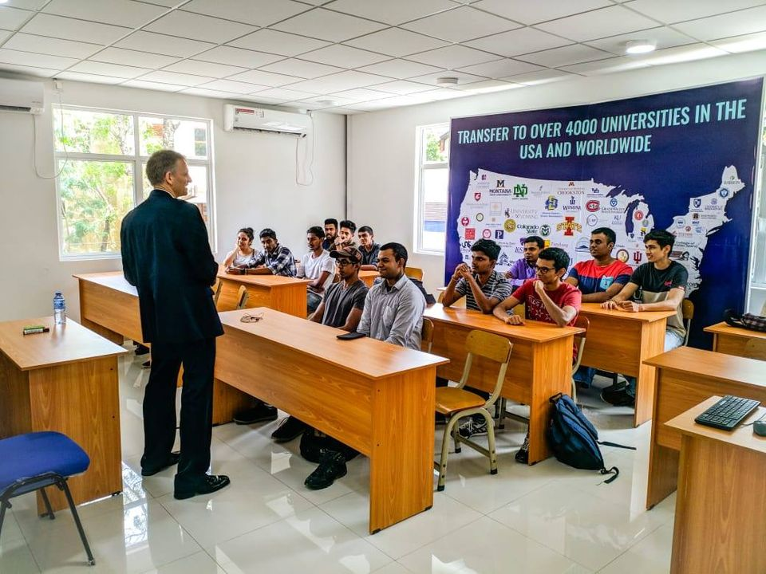

<!DOCTYPE HTML>

<html lang="en"></html>
	<head>
		<title>About Us</title>
		<meta charset="utf-8" />
		<meta name="viewport" content="width=device-width, initial-scale=1.0">
		<meta name="description" content="" />
		<meta name="keywords" content="" />
		<link rel="stylesheet" href="assets/css/main.css" />
	</head>
	<body class="is-preload">

			<!-- Header -->
			<header id="header">
				<a class="logo" href="index.html">EIHE</a>
				<nav>
					<a href="#menu">Menu</a>
				</nav>
			</header>

		<!-- Nav -->


			<nav id="menu">
				<ul class="links">
			
					<li><a href="index.html">Home</a></li>
					<li><a href="about_us.html">About Us</a></li>
					<li><a href="ouralumni.html">Our Alumni</a></li>
					<li><a href="gallery.html">Gallery</a></li>
					<li><a href="degree.html">Degree Programs</a></li>
					<li><a href="other2.html">Other Programs</a></li>
					<li><a href="facilities.html">Facilities</a></li>
					<li><a href="contact_us.php">Contact Us</a></li>
				</ul>
			</nav>

		<!-- Heading -->
			<div id="heading" style="background-image: url('images/sample2.jpg');">
				<h1>About Us</h1>
			</div>
			

		<!-- Main -->
			<section id="main" class="wrapper">
				<div class="inner">
					<div class="content">
						<header>
							<h2 style="color: red; text-align: center;">WHO ARE WE?</h2>
						</header>
						<br>
						<p>Eiffel Institute of Higher Education (EIHE) is a pioneer higher educational institution in Sri Lanka and has proved 26 years of academic excellence. We offer the 2+2 University Transfer Program where a student can start the first two years of an American Degree in Sri Lanka and then can transfer to over 4000 Universities and Colleges in the United States, Canada, or another country. Pre-Medicine, Engineering, Mechatronics, Psychology, Biology, Information Technology, Business and Mathematics are some of the popular programs students choose from at EIHE. We also offer the two years Associate degree in Liberals Arts and Associate in Science degree in Sri Lanka conferred by Broward College, Florida, USA.</p>
						<p>The students at the EIHE enjoy benefits that are no different from those of their fellow Americans. They have access to over 28 Florida State University libraries with millions of books and electronic resources through their student portal while in Sri Lanka.</p>
						<p>Students with an Associate in Arts (AA) degree from Broward College are guaranteed admission to a State University in Florida USA. To this day, EIHE has successfully transferred close to 4000 students to various American Universities. Large numbers of our students have received scholarships ranging from US$ 4000 – US$30,000 to various universities in the United States. We are proud that many of our students have gone on to complete Masters and PhD programs while others have obtained jobs in leading organizations locally and globally.</p>
						<hr />
						<br>
						<h2 style="color: red; text-align: center;">26 years of excellence & counting</h2>
						<br>
						<p>EIHE is also pleased to launch a world-class Honors Program that takes learning to a greater height. Students with high academic performance or with a Grade Point Average of 3.5 or above can apply to become members of the Honors Society and Phi Theta Kappa or rather PTK chapter, which will make them eligible for many scholarships from US universities and to be admitted to the top ranked universities in the United States. Thus, EIHE has become a quality American Education provider which no other institution can match in Sri Lanka.</p>
						<p>EIHE offers numerous Diplomas and Certificate Programs in Aviation studies, Business Management, Psychology, Education, Hospitality and Hotel Management, Information Technology, Communication, English and Languages. These study programs carry a lot of weight because they are highly recognized in the industry and in their respective fields. They make a significant impact on career advancement. </p>
						<p>In keeping with its broad vision of education and training human resources EIHE caters to the educational needs of the youth of all communities and classes. Our student population consists of students not only from Sri Lanka but also of many other countries such as Maldives, India, Korea, Nigeria, Philippines, Columbia, China and Mauritius. All this and more are offered to students in a multinational and multi-cultural study environment where quality education is our motto.</p>
					</div>
				</div>
			</section>

			<center>
				
				
			</center>

			<br><br><br><br><br><br><br>

		<!-- Footer -->
		<footer id="footer">
			<div class="inner">
				<div class="content">
					<section>
						<h3>Our Vision</h3>
						<p>Eiffel Institute of Higher Education aspires to be the leader in global education, and to be known as a progressive institution, that implements student-centered teaching and academic excellence to empower students to function as strong and versatile leaders in a multi-ethnic environment.</p>
					</section>
					<section>
						<h4>Wondering what to study???&#128580</h4>
						<ul class="alt">
							<li><a href="s1.html">BSc (Hons) Chemistry</a></li>
							<li><a href="c2.html">BSc (Hons) Computer Security</a></li>
							<li><a href="b4.html">BSc (Hons) Marketing Management</a></li>
							<li><a href="s3.html">BSc (Hons) Marine Biology</a></li>
						</ul>
					</section>
					<section>
						<h4>Let's be friends!&#128512</h4>
						<ul class="plain">
							<li><a href="https://twitter.com/"><i class="icon fa-twitter">&nbsp;</i>Twitter</a></li>
							<li><a href="https://www.facebook.com/"><i class="icon fa-facebook">&nbsp;</i>Facebook</a></li>
							<li><a href="https://www.instagram.com/?hl=en"><i class="icon fa-instagram">&nbsp;</i>Instagram</a></li>
							<li><a href="https://www.pinterest.com/"><i class="icon fa-pinterest">&nbsp;</i>Pinterest</a></li>
						</ul>
					</section>
				</div>
				<div class="copyright">
					&copy; Copyright 2020 - All Rights Reserved <br>Concept, Design & Development by SlobbySlackers
					 </a>
				</div>
			</div>
		</footer>

	<!-- Scripts -->
		<script src="assets/js/jquery.min.js"></script>
		<script src="assets/js/browser.min.js"></script>
		<script src="assets/js/breakpoints.min.js"></script>
		<script src="assets/js/util.js"></script>
		<script src="assets/js/main.js"></script>

</body>
</html>